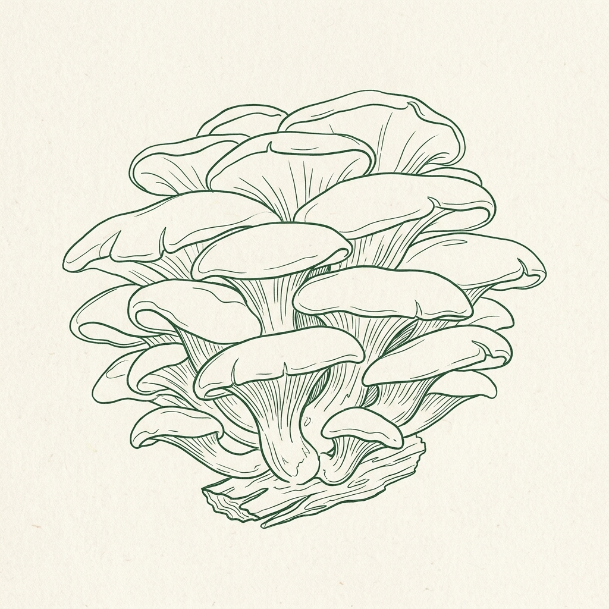

Cultivation
Blue Oyster Mushroom Grow Kit
The fastest growing, highest yielding gourmet kit—produces massive clusters of tender blue oyster mushrooms.
- Fastest colonization rate: first crop in as little as 10 days
- Incredibly high biological efficiency with dense, thick flushes
- Certified organic oak-sawdust substrate pre-colonized block
- Produces 2-3 flushes of fresh gourmet mushrooms
🔬 Scientific Clinical Backing
Blue Oyster mushrooms (Pleurotus ostreatus) are wood-decaying saprophytes known for their exceptionally aggressive mycelial growth. Studies in biotechnology demonstrate that Pleurotus species produce high yields rapidly due to their ability to synthesize powerful lignin-modifying enzymes, allowing them to digest hardwood cellulose with high biological efficiency.
Scientific Study: Journal of Mycology and Biotechnology (2021). 'Enzymatic activity and substrate utilization of Pleurotus ostreatus on hardwood media.'
📦 Dosage & Application
Cut a 2-inch slit or 'X' in the plastic face of the block. Mist the cut 2-3 times daily with water. Place in a well-ventilated area with indirect light. Harvest in 10-12 days once the caps begin to unfurl.
FDA & Legal Disclaimer: Pre-colonized cultivation kit for legal gourmet culinary species. Safe for indoor home use.